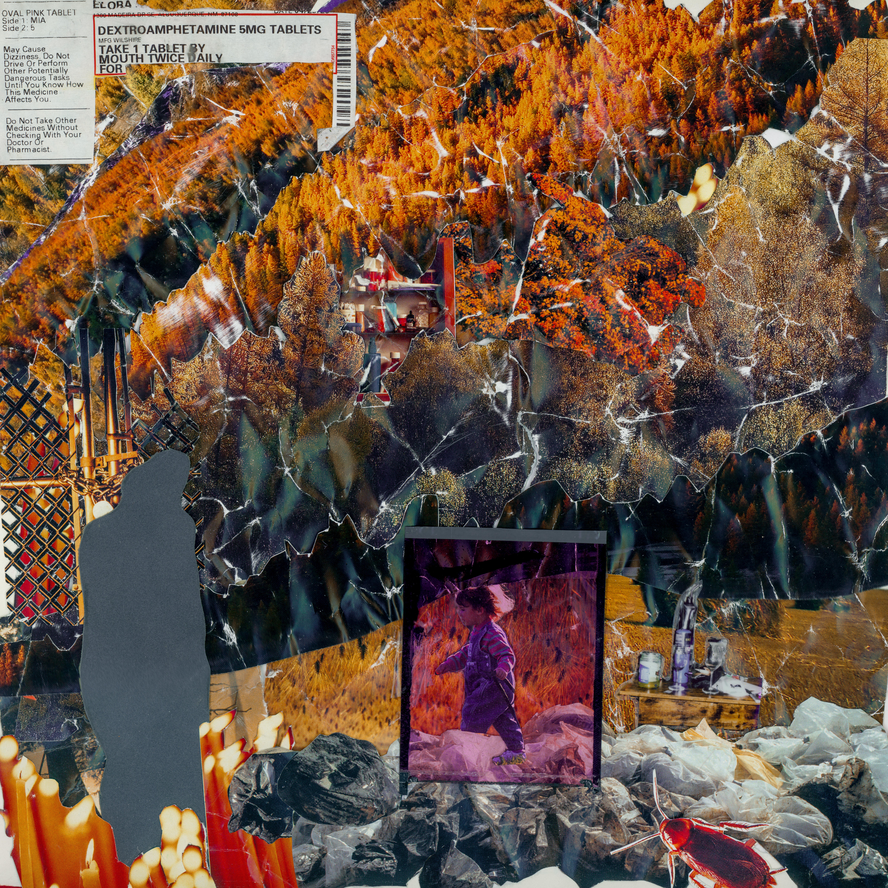
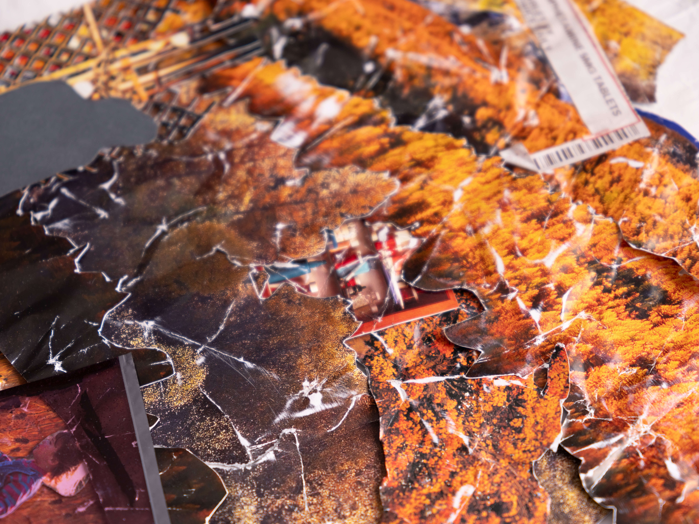
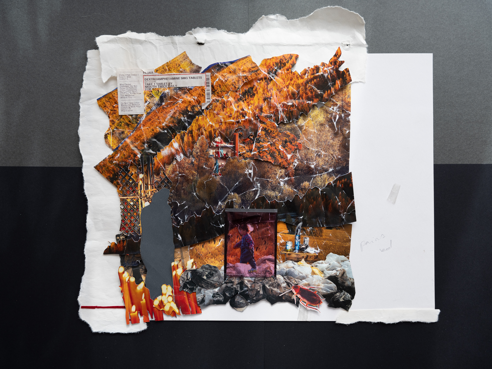
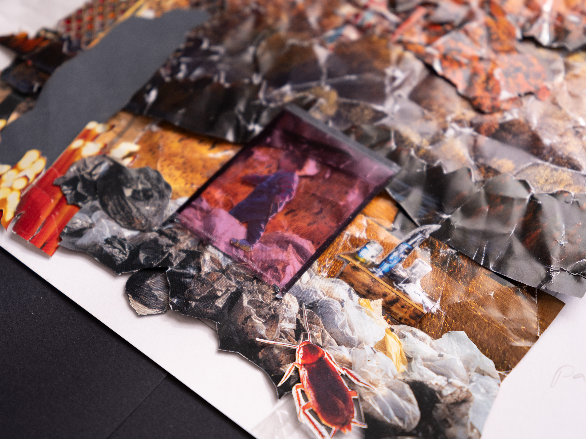
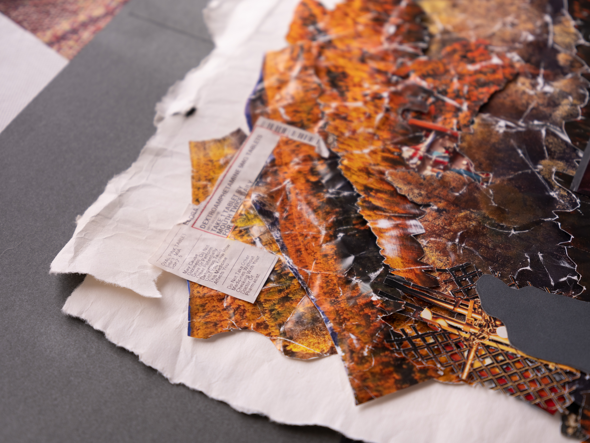

Archive 005
Leaves
Created by Elora Jacobs, this mixed media collage served as the artwork for Leaves. Carefully assembled with photographic fragments, found imagery, hand-cut paper, adhesive materials, and printed ephemera.
This archive is a detailed capture of the cover from the EP Leaves by Standingandlookingaround





TEANF ARCHIVE
ARCHIVE 005
DIGITIZED 2026